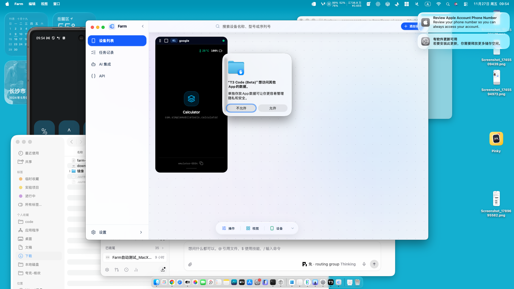
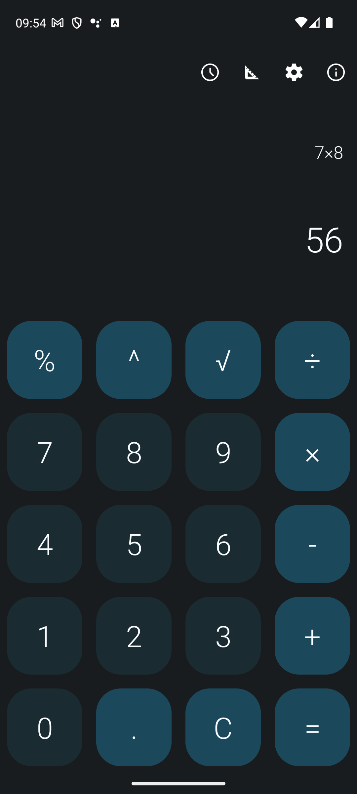

Farm Mac mini 测试报告
2026-11-27 09:52–09:56 · main 520f0ad
Mac mini / 替换安装与回归通过
安装包v2026.11.25-beta.1macOS arm64 DMG，SHA-256 已核验
测试设备10.0.0.11macOS 26.7.1 · arm64
Android 设备emulator-5554H.264 · 460×1024（WS）
WebRTC 状态未运行调试页默认关闭（/api/webrtc/poc → 404）
结果
- 本次从 GitHub Release 重新下载 DMG（21,132,033 字节），摘要
a6a6871f…与记录一致，09:52 替换安装到/Applications/Farm.app，版本2026.11.25-beta.1。 - 桌面服务端口
1989，/api/desktop/health→200 {"status":"ready"}；/api/desktop/config与端口一致，未被环境变量覆盖。 - 设备发现正常：
emulator-5554（Android 14 / sdk 34）在线，前台为计算器。 - WS 投屏直连：握手
101，元数据h264 460×1024+aac音频，6 秒内 327 个视频帧。 - 自动化触控回归：
/api/automation/act提交C 7 × 8 =共 8 行全部完成，check 56命中，计算结果确为56。 - 投屏自恢复回归：设备端杀掉 scrcpy 服务后端后，StreamKeeper 在 3 秒内重新建立会话（
startSession254ms）并继续供帧。 - 代码自上次测试后无新增提交，
v2026.11.25-beta.1仍是最新发布包，因此本轮以发布产物可安装性与既有链路回归为主。
界面与设备证据




7 × 8 = 56。
2 + 2 = 4。未覆盖项与观察
本次为 Mac mini 侧发布包替换安装与回归，不等于整个 beta 版本验收完成。版本任务记录 beta 服务实例 8081 仍未提供，所以通道隔离、beta/正式通道切换、应用内更新与 8081 实例链路没有执行；Windows 原生测试不在本机范围。
取帧接口在保活租约刚清理时会走 ADB screencap 回退（返回 PNG 1080×2400），属既有回退设计，未按缺陷记录。详细步骤与脱敏日志见 steps.md 与 logs.txt。